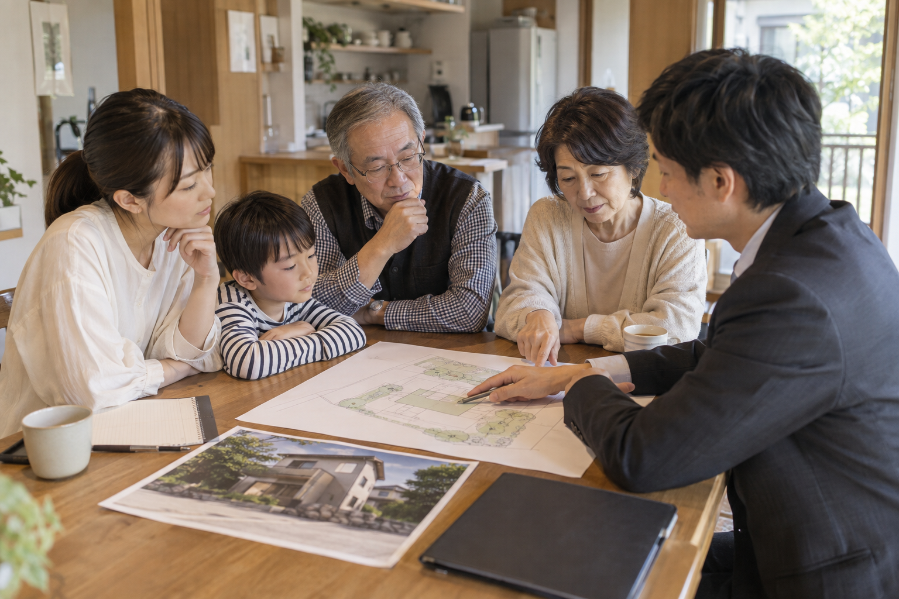

「使っていない土地を、駐車場にしませんか」。そんな提案を受けると、持て余している土地に道が開けたように感じます。でも、その土地の可能性は駐車場だけでしょうか。
土地活用の広告は、提案する会社の得意な商品へつながるものです。それ自体が悪いわけではありません。ただ、一社の提案だけで選択肢を狭めないでほしい。私はまず、受け継いだ土地や空き家で「何ができるか」を広げ、そのあとに数字と手間を比べることを勧めます。
駐車場ありきで決めず、空き家賃貸、土地貸し、建築、売却、管理継続を比較。仮の収支計算と固定資産税の確認から、家族と専門家へ相談する順番を紹介します。
公開日：未定
土地活用・比較 文｜エイスケ（住宅と教育の専門家）
文｜エイスケ（住宅と教育の専門家）
「使っていない土地を、駐車場にしませんか」。そんな提案を受けると、持て余している土地に道が開けたように感じます。でも、その土地の可能性は駐車場だけでしょうか。
土地活用の広告は、提案する会社の得意な商品へつながるものです。それ自体が悪いわけではありません。ただ、一社の提案だけで選択肢を狭めないでほしい。私はまず、受け継いだ土地や空き家で「何ができるか」を広げ、そのあとに数字と手間を比べることを勧めます。
空き家があるなら、安全性や設備を調べ、そのまま貸すか、改修して貸すかを考えます。解体の前に建物を活かす方法を比べ、維持費や管理の負担が大きければ売却も候補に入れましょう。
| 選択肢 | 先に調べること | 負担・出口の注意 |
|---|---|---|
| 空き家を貸す | 建物の安全性、設備、地域の借り手需要 | 修繕、募集、入居中の対応、契約終了条件 |
| 月極・時間貸し駐車場 | 近隣需要、車の出入り、台数、料金 | 整備、管理契約、空き区画、原状回復 |
| 賃貸住宅を建てる | 建築できる規模、家賃、空室、借入 | 初期費用、長期修繕、返済、将来の売却 |
| 土地を貸す | 用途、借り手、期間、返還条件 | 権利関係と契約。必要な時すぐ戻るとは限らない |
| 売却する | 境界、権利、相場、売却後の手残り | 仲介等の費用、税金、家族の意向 |
| 管理して保有する | 今後の利用予定、年間維持費 | 草刈り、建物管理、税金。放置と区別する |
「収益を得たい」「親の家を残したい」「管理の負担を減らしたい」。目的を決めてから、この一覧で候補を二つか三つに絞ります。
月額8,000円の月極駐車場を6台分つくると仮定しましょう。満車なら年間57万6,000円、平均稼働率80％なら46万800円。ここから管理費、草刈り、税金、保険、修繕費などを引いて考えます。
| 架空の試算条件 | 計算例 |
|---|---|
| 年間売上・稼働80％ | 8,000円 × 6台 × 12か月 × 80％ ＝ 460,800円 |
| 年間の管理・税金等を仮に12万円 | 差引340,800円（借入返済・所得税等の前） |
| 整備費を仮に120万円 | 単純回収は約3.5年。利息・追加工事・売却等は未考慮 |
| 稼働50％に下がる場合 | 売上288,000円 − 120,000円 ＝ 168,000円 |
表は、すでに所有する土地を使う架空の試算です。土地の取得費、借入返済、所得税等は含めていません。賃料や稼働率、経費を現地の数字に置き換え、空き家賃貸や売却後の手残り、保有を続ける年間負担と比べましょう。
サブリースで管理を任せる場合も、賃料の見直し、修繕負担、中途解約の条件は契約書で確認します。管理の手間を減らせても、費用や責任のすべてを任せられるとは限りません。[1]
「砂利なら固定資産税が安く、アスファルトにすると高くなるの？」。この疑問は、土地への課税と、舗装や設備などの償却資産への課税に分けると整理できます。
事業用の駐車場では、舗装や設備が償却資産の申告対象になります。豊明市の案内は、舗装路面の例に砂利も挙げています。[2]砂利なら対象外と考えず、申告と実際の税負担を自治体に確認しましょう。
住宅を壊して駐車場にする場合は、土地の住宅用地特例が外れる点も確認が必要です。[3]税額が一律に6倍になるという意味ではありません。解体前に、自治体の固定資産税窓口で変更後の負担を確かめておきましょう。
敷地の広さ、建物の有無、使い方の希望をまとめると、AIに比較表のたたき台を作ってもらえます。資料を渡すときは不要な氏名や契約情報を除き、サービスのデータの扱いも確認してください。
例えば「売却、駐車場、空き家賃貸を比べたい。初期費用、毎年の費用、管理の手間、やめる時の条件を並べ、分からない数字は確認事項にして」と頼みます。
できた表を、地域の不動産事業者や建築士、税理士との相談に使いましょう。建築の可否、境界、需要、税額などは、現地と資料に基づいて確かめる項目です。
「家族が将来住むつもりだった」「管理は兄弟に頼むつもりだった」。そんな認識のずれを残さないよう、誰が費用を出し、管理し、収入をどう扱うかを話しておきましょう。
候補と費用、気になる点を一枚にまとめておくと、相談が進みます。共有名義の場合は、家族の希望とともに、権利者の同意など必要な手続きも確かめてください。
名義を変える、資金援助を受ける、売却する場合は、それぞれ税金や登記の確認が必要です。計画の段階で税理士や登記の専門家に相談しておくと、手残りまで含めて比べられます。

土地を持っているなら、まず「何を実現したいか」を言葉にしてみましょう。その軸があれば、営業提案も自分たちの目的に合うかどうかで選べます。
収入が増えても、遠方まで管理に通う負担が大きければ、続けにくくなります。売却も、管理しながら保有することも選択肢です。家族の希望と数字を並べて、無理なく続けられる使い方を選びましょう。
相談先の一つですが、その前に売却や空き家賃貸なども候補にし、目的を整理しましょう。
砂利敷きも償却資産の対象になり得ます。土地の税とは分け、自治体へ確認します。
住宅用地の特例などの扱いが変わり得ますが、実際の税額を一律には言えません。
仮の条件で比較計算はできますが、実際の需要・費用・法令は専門家の確認が必要です。
契約により修繕費や所有者の責任が残ります。賃料改定や終了条件も確認します。
管理費と将来の目的を確認したうえで保有することも選択肢です。
この記事を書いた人｜エイスケ
1986年生まれ。実家の工務店・不動産に10年間従事したのち、教育の世界へ。住宅と教育、両方の視点から「豊かな暮らし」をテーマに執筆します。※本コラムは筆者個人の見解・経験に基づくものです。最終的な判断は各分野の専門家にご相談ください。